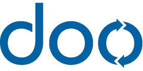

Why choose PSPDFKit?

Time to Market

Customizable

Easy Integration
Organizations who enjoy PSPDFKit
 This is just a small selection of customers, some well-known companies have chosen PSPDFKit Enterprise to protect their privacy.What Our Clients Say
– (Unnamed company in the Financial Services industry)Let me first say how happy we are with your framework. I’ve found the user experience, the developer experience, and overall performance of the viewer to be excellent. I don't want to have my company name listed. Using your editor is currently providing us a competitive advantage over our piers - I don't want to make it easy for them to figure out what we're doing!
– Mike Farmelo, ARINC Incorporated.I want to complement you on your design and code. Your code quality is outstanding. I particularly like the overrideClassNames property, this makes the framework easy to work with and modify the behavior for our specific needs. Usually with just a few lines of code in an override.
– Kemal Pajevic, Software Engineer, MV-Nordic.I must say that of all third-party vendors I have ever had to work with, none have ever come even close to the degree of cooperation that Peter Steinberger from PSPDFKit has offered. He is beyond helpful with speedy replies and bug fixes. Really goes the extra mile.
– Viet Pham, PIMCO - Your Global Investment Authority.We were using FastPDFKit before, and they have completely stopped responding. If only we had found you ages ago! I've got the demo fully integrated into our application, it works like a charm.
– Marc Romano, NuPitch Software.Thanks for your continued hard work. Choosing PSPDFKit made the viewer the easiest part of the application.
– Vittorio Causarano, LIBRE S.C.I'm really impressed how fast you are upgrading your PDF SDK, I'm so happy I've chosen your framework!
– Alex Taras, Ruby Tribe.We were impressed on how fast we got a working prototype to show off to the client. Integrating PSPDFKit SDK into our existing project was a breeze and we loved that most of the features we needed for our app were there out of the box. Highly customizable, well documented, great support… this is THE PDF library everyone should use. Money well spent!
– Martin Schlaak, WRS Softwareentwicklung GmbH.PSPDFKit is an excellent toolkit with great functions. The integration in out first iOS app was very simple. From all those examples, it was easy to extend PSPDFKit to our taste.
– Niklas Saers, Trifork.I'm getting very aware of my dependencies these days. That makes me appreciate even more how super-awesome PSPDFKit is! You've done a really wonderful work with the product, and the source is super-readable and makes me a bit ashamed of my own code. ;-)
– Roland Meijs, iOS Developer at IJenIJ. (Netherlands)I really enjoy working with PSPDFKit - it's a fantastic framework and I am learning a lot from reading your code and patterns. What you have coded is exactly what we were looking for. Both the publishers and our clients are very happy with the results.
– Jesper Avot, Avot Media BV.I'm becoming a real fan, because it's really a fantastic library!
– Steve Krenek, zyquest.com.Thanks for the excellent product, and also the excellent service. We're very happy with our purchase.
– Chan Kruse, iOS Developer.We're extremely happy with the PSPDFKit SDK. It's really incredible, and it'll really help make the app complete.
– Randy Becker, iOS Developer at Punchkick Interactive.We're seriously in love with PSPDFKit; it's saved us a ridiculous amount of work. Awesome stuff.
– Pierfrancesco, iOS Developer.I just had to change your example's filename and published it. Everybody's pretty happy with it. The nice and smooth behavior has been highly appreciated.
– Cédric Luthi, iOS Developer at hortis.Remember when I said I would open source PDF Kit for iOS? Well, I won’t. Just buy http://PSPDFKit.com from @steipete instead.